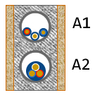
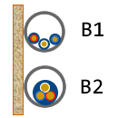
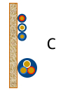
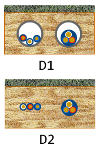
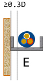
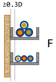
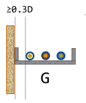

| Reference Method | Description |
|---|---|
|  | A1 - Insulated single core conductors in conduit in a thermally insulated wall A2 - Multicore cable in conduit in a thermally insulated wall This method also applies to single core or multicore cables installed directly in a thermally insulated wall (use methods A1 and A2 respectively), conductors installed in mouldings, architraves and window frames. |
|  | B1 - Insulated single core conductors in conduit on a wall B2 - Multicore cable in conduit on a wall This method applies when a conduit is installed inside a wall, against a wall or spaced less than 0.3 x D (overall diameter of the cable) from the wall. Method B also applies for cables installed in trunking / cable duct against a wall or suspended from a wall and cables installed in building cavities. |
|  | C - Single core or multi-core cable on a wooden wall This method also applies to cables fixed directly to walls or ceilings, suspended from ceilings, installed on unperforated cable trays (run horizontally or vertically) and installed directly in a masonry wall (with thermal resistivity less than 2 K.m/W). |
|  | D1 - Multicore or single core cables installed in conduit buried in the ground D2 - Multicore or single core cables buried directly in the ground |
|  | E - Multicore cable in free-air This method applies to cables installed on cable ladder, perforated cable tray or cleats provided that the cable is spaced more than 0.3 x D (overall diameter of the cable) from the wall. Note that cables installed on unperforated cable trays are classified under Method C. |
|  | F - Single core cables touching in free-air This method applies to cables installed on cable ladder, perforated cable tray or cleats provided that the cable is spaced more than 0.3 x D (overall diameter of the cable) from the wall. Note that cables installed on unperforated cable trays are classified under Method C. |
|  | G - Single-core cables laid flat and spaced in free-air This method applies to cables installed on cable ladder, perforated cable tray or cleats provided that the cable is spaced more than 0.3 x D (overall diameter of the cable) from the wall and with at least 1 x D spacings between cables. Note that cables installed on unperforated cable trays are classified under Method C. This method also applies to cables installed in air supported by insulators. |